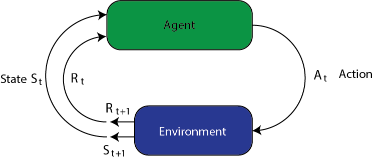
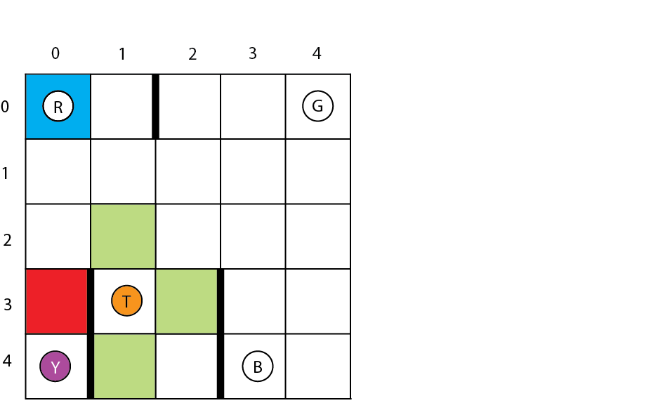
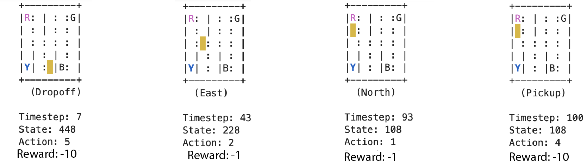
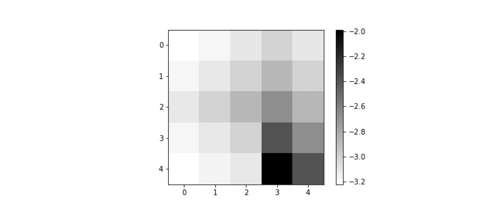
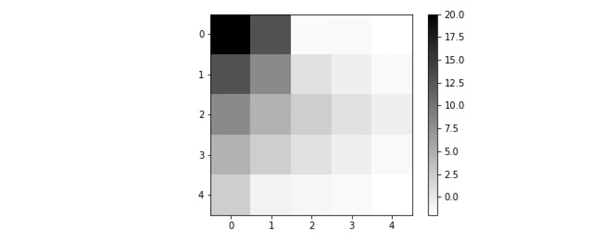
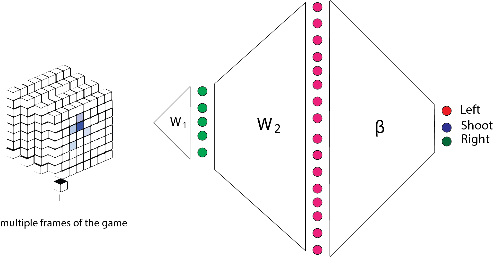
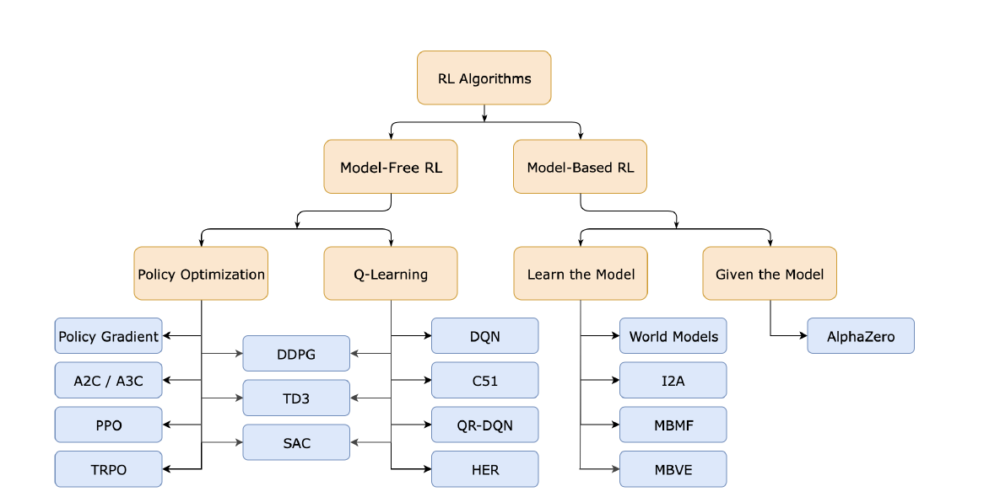
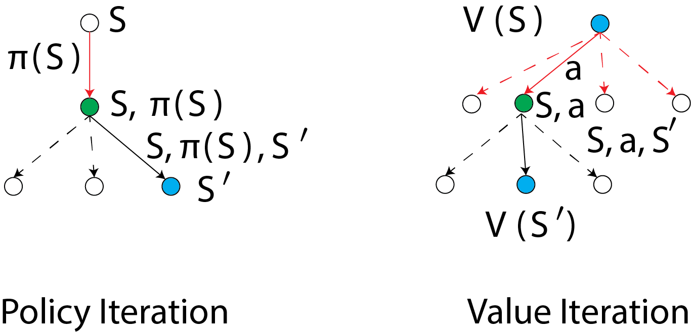

Reinforcement Learning
Reinforcement Learning is the third category of big topics in machine learning after supervised learning and unsupervised learning. When you think of Reinforcement Learning you might relate many concepts to that:
- Playing chess, backgammon, and etc.
- Learning to walk or ride a bike
- A robot vacuum cleaning up the house
- Drug discovery, personalized health, energy management
In RL the environment is in state $s$ at a given time and the agent takes action $a$. The environment transitions to state $s’ = \text{next}(s, a)$. The agent receives reward $r = \text{reward}(s; a)$.
This is said to be a Markov decision process. It’s “Markov” because
the next state only depends on the current state and the action
selected. It’s a “decision process” because the agent is making
choices of actions in a sequential manner.
RL is inherently sequential. Agent can’t act too greedily; needs to be strategic. The aim of RL is to learn to make optimal decisions from experience.
Formulation
- The environment is in state $s$ at a given time.
- The agent takes action $a$.
- The environment transitions to state $s’ = \text{next}(s; a)$
- The agent receives reward $r = \text{reward}(s; a)$
RL is inherently sequential

Principles
Policy: A mapping from states to actions. An algorithm/rule to make
decisions at each time step, designed to maximize the long term
reward.
Reward signal: The sequence of rewards received at each time step.
An abstraction of “pleasure” (positive reward) and “pain” (negative
reward) in animal behavior.
Value function: A mapping from states to total reward. The total
reward the agent can expect to accumulate in the future, starting from
that state.
Rewards are short term. Values are predictions of future rewards.
Model: Used for planning to mimic the behavior of the environment,
to predict rewards and next states. A model-free approach directly estimates a value function, without
modeling the environment. Analogous to distinction between generative and discriminative
classification models.
In generative model we model the environment which involves the states in that environment.
- Discriminative model: we put the label for data points given the input
- Generative model: we have a model of input for a given class. We predict input for that class. This could be a basis for predicting classes in future.
model-free is easier and less ambitious.
Taxi Problem
A taxicab drives around the environment, picking up and delivering a passenger at four locations.

Four designated locations: R(ed), G(reen), Y(ellow), and B(lue). Taxi starts off at random square and passenger is at random location. Taxi drives to passenger’s location, picks up the passenger, drives to passenger’s destination, drops off passenger. Once the passenger is dropped off, the episode ends.
- 25 taxi positions.
- 5 possible locations of passenger: At waiting location or in taxi.
- 4 possible destination locations.
- Total number of states: $25 \times 5 \times 4 = 500$.
Passenger location coded as integers:
- R(ed)
- G(reen)
- Y(ellow)
- B(lue)
- in taxi
Destinations coded as:
- R(ed)
- G(reen)
- Y(ellow)
- B(lue)
Taxi problem: State space
Agent actions coded as:
- move south
- move north
- move east
- move west
- pickup passenger
- drop off passenger
Rewards:
- Default reward per step: -1
- Reward for delivering passenger: +20
- Illegal “pickup” or “drop-off”: -10
We can encode the state as a tuple:
state = (taxi row, taxi column, passenger location, destination)
Q-Learning
Maintains a “quality” variable $Q(s; a)$ for taking action $a$ in state $s$. This is a measure of the cumulative rewards obtained by the algorithm when it takes action $a$ in state $s$.
There is a tradeoff between short-term and long-term reward. Quality should not be assessed purely based on the reward the action has in the current time step.
Q-Learning Update
$$ \begin{align} Q(s,q) \leftarrow Q(s,q) + \alpha (\text{reward}(s,a)+\gamma \max_{a’} Q(\text{next}(s,a),a’)-Q(s,a)) \end{align} $$
This is like gradient ascent. If you choose $\alpha$ big, you will learn quickly (but not too big). You can be conservative by choosing it very small, but you will make slow progress. When $\gamma=0$ we are greedy and we want to maximize the short term rewards. As $\gamma$ gets larger we are putting more emphasize on long term rewards.
Sometimes, there is another parameter named $\epsilon$ to choose random actions (i.e., to explore). But, with probability $1-\epsilon$ you wanna choose the action that maximize your reward (i.e., Exploration vs exploitation).
When action $a$ is taken in state $s$, reward $\text{reward}(s; a)$ is given. Then, the algorithm moves to a new state $\text{next}(s; a)$.
Cumulative future reward of this action is $\max_{a’} Q(\text{next}(s,a),a’)-Q(s,a))$. Future rewards discounted by factor $\gamma < 1$. Trades off short-term against long-term rewards.
You can start $Q$ with arbitrary initialization. And the algorithm will keep running until a terminal state which could be the state where the passenger will be dropped off. After this step, there is no expected reward for that episode (i.e., it’s $0$). Indeed, you initialize them to $0$ and basically they are known quantity for that game.
Example: Exploring randomly
There is a default per-step reward of -1, and a reward of +20 for delivering the passenger. Carrying out a “pickup” or “drop-off” action illegally has a reward of -10.
In the ascii art graphics, the following color schemes are used:
- blue: passenger
- magenta: destination
- yellow: empty taxi
- green: full taxi other letters (R, G, Y and B): locations for passengers and destinations

Now, suppose we fix the passenger location and taxi locations. The possible positions for the passenger are corners, sides, or the taxi itself. Therefore we have $5\times 5$ grid points.
Example 1:
The question is, if the passenger is waiting?

answer: The passenger is in location B.
Example 2:
How about this example? answer: Yes, the passenger is in the taxi and wants to go to top left in the grid.

Bellman Equation
The optimal value function is the largest expected discounted long term reward starting from that state.
Bellman Equation (deterministic case)
The optimality condition for the value function $v_*$ is:
$$ v_* = \max_a \Big\{ \text{reward}(s,a) + \gamma v_*(\text{next}(s,a)) \Big\} $$
You can’t solve this equation directly. You have to solve it by iteration using gradient descent.
The Q function is a detailed version of $v$ function. It’s the value of taking action $a$ when being at state $s$. The optimality condition for the Q-function is:
$$ Q_*(s,a) = \text{reward}(s,a) + \gamma \max_{a’} Q_*(\text{next}(s,a),a’) $$
Then $v_*(s) =\max_{a’} Q_*(s,a’)$.
And Q-learning algorithm is trying to solve this fixed point equation. And that’s where this comes from:
$$ \begin{align} Q(s,q) \leftarrow Q(s,q) + \alpha (\text{reward}(s,a)+\gamma \max_{a’} Q(\text{next}(s,a),a’)-Q(s,a)) \end{align} $$
If we know $Q_*$, we know $v_*$:
$$
\begin{align}
v_*(s) =& \max_{a’} Q_*(s,a’) \\
=& \max_a \Big \{ \text{reward}(s,a) + \gamma \max_{a’} Q_*(\text{next}(s,a),a’) \Big \} \\
=& \max_a \Big \{ \text{reward}(s,a) + \gamma \max_{a’} v_*(\text{next}(s,a)) \Big \}
\end{align}
$$
which is the Bellman equation.
Bellman Equation (random environments)
The optimality condition for the value function $v_*$ is:
$$ \begin{align} v_* = & \max_a \sum_{s’,r} p(s’,r|s,a) \Big \{ r+\gamma v_*(s’)\Big\} \\ =& \max_a E\Big[R_{t+1} +\gamma v_*(S_{t+1}) | S_t = s, A_t=a \Big] \end{align} $$
Value function optimality
$$ \begin{align} v_* = \max_a E\Big[R_{t+1} +\gamma v_*(S_{t+1}) | S_t = s, A_t=a \Big] \end{align} $$ It’s the largest expected long-term reward.
Q function optimality
The optimality condition for the Q function is:
$$ \begin{align} Q_*(s,a) = & \max_a \sum_{s’,r} p(s’,r|s,a) \Big \{ r+\gamma \max_{a’}Q_*(s’,a’)\Big\} \\ =& \max_a E\Big[R_{t+1} +\gamma Q_*(S_{t+1},a’) | S_t = s, A_t=a \Big] \end{align} $$
Some Comments on Q-learning
Q-learning is an example of temporal difference (TD) learning. It’s an implicit policy and there is not explicit policy. It’s just a simple exploration policy with probability $\epsilon$ and exploitation with probability $1-\epsilon$. It is an “off-policy” approach that is practical if the space of actions is small. Value iteration is analogous approach for learning the value function for a given policy $\pi$, $a$ (possibly random) choice of action for each state.
Direct implementation of Q-learning only possible for small state and action spaces. For example in the taxi driver example we can create a table of 500 state-action entries. For large state spaces we need to map states to “features”. Deep RL uses a multilayer neural network to learn these features and the Q-function.
$$ \begin{align} Q_*(s,a;\theta) = E\Big[R_{t+1} +\gamma Q_*(S_{t+1},a’;\theta) | S_t = s, A_t=a \Big] \end{align} $$
the parameter $\theta$ are the weights in a neural network. We can’t put the Q function in a table because it’s huge. The state $S_{t+1}$ is the input to the network. Each possible action $a$ is assigned a value by the network.
How do we solve this implicit equation for the network parameters?.
Let $y_t$ be a sample from this conditional distribution:
$$ y_t = R_{t+1} + \gamma \max_{a’} Q(S_{t+1},a’;\theta_{\text{current}}) $$
Adjust the parameters $\theta$ to make the squared error small (SGD):
$$ (y_t-Q(s,a;\theta))^2 $$
How?
$$ \theta \leftarrow \theta + \eta (y_t-Q(s,a;\theta))\bigtriangledown_{\theta} Q(s,a;\theta) $$
This is the framework for the space invader game. It should be multiple frames for the game to appropriately capture states over time.
Images cropped to $84\times 84$ pixels; 128 color palette; input sequence of 4 frames; reward is score. 3-layer convolutional neural network, ReLU non linearity, final layer fully connected, 256 neurons. Q-learning carried out over mini batches of playing sequences that are “remembered and replayed”.

Recall from Bellman equation that $y_t$ is an expectation. Learning takes place when expectations are violated. The receipt of the reward itself does not cause changes. Like dopamine in your brain.
Simple DQN example
Recall that in supervised learning loss function is $L(\hat{Y},Y)$ where we can program it directly. Often RL loss functions are built up dynamically. Automatic differentiation allows us to handle this which is one of the biggest achievements in 20th century. It’s even bigger than impact of GPUs in deep learning (i.e., According to John Lafferty’s speech in University of Texas at Austin). TensorFlow supports automatic differentiation by recording relevant operations executed inside the context of a “tape”.
It then uses the record to compute the numerical values of gradients using “reverse mode differentiation”.
|
|
and then the gradient will be computed numerically.
|
|
Automatic differentiation: Parameter updates
Here is an example of automatic differentiation.
|
|
Multi-armed bandits
You have a set of k-slot machines (e.g., $k=5$). The assumption is that, one of the slot machines is gonna give you big payoff and the other slot machines are gonna pay you lower payoffs. The simplest abstraction of this problem: every time you pull an arm it’s independent from the other times you pull the arm. So it’s not the case that you long pull an arm the more you get paid. However, there are many different versions of this.
Arm $k$ has the expected payoff $\mu_k$ with variance $\sigma^2_k$ on each pull.
Each time step, pull an arm and observe the resulting reward.
Played often enough, can estimate mean reward of each arm.
The question is, what is the best policy?
Indeed, this is exploration-exploitation tradeoff.
We’ll treat this as an RL problem and hit it with a big hammer:
Deep Q-learning.
The policy here is very simple: keep playing the machines! Once you found that machine which gives the highest payoff, just keep playing with that one.
|
|
We are using tf.random.normal as we want to use auto gradient later.
The code q_values = layers.Dense(action_dim, activation="linear")(hidden3) is estimating q-values for each of the bandits.
Here is the main algorithm.
As you see, the states are just constant.
We have 5 bandits which each indicate a mean.
action_dim=5 since we have 5 actions.
Then we construct the 4 layer neural network.
|
|
|
|
Overall, we can catogorize reinforcement learning algorithms as follows:

Policy iteration
- Initialize policy arbitrarily
- Compute values for current policy (policy evaluation)
- Update policy to match values (policy improvement)
- Go to 1.

We evaluate a policy $\pi(s)$ by calculating the state value function $V(s)$:
$$ V(S) = \sum_{s’,r’} p(s’,r’|s,\pi(s))[\text{reward}(s,a) + \gamma V(s’)] $$ Then, we calculate the improved policy by using one-step look-ahead to replace the initial policy $\pi(s)$:
$$ \pi(S) = \arg\max_a \sum_{s’,r’} p(s’,r’|s,\pi(s))[\text{reward}(s,a) + \gamma V(s’)] $$
As for vanilla Q-learning, this only works for small state spaces. A “tabular” method, computes all values $V(s)$ and actions $\pi(s)$.
Value Iteration
In value iteration, we compute the optimal state value function by iteratively updating the estimate $V(S)$. We start with a random value function $V(s)$. At each step, we update it:
$$ V(S) = \max_a \sum_{s’,r’} p(s’,r’|s,\pi(s))[\text{reward}(s,a) + \gamma V(s’)] $$
Policy gradient methods
Parameterize the policy—$\pi(s)$—and use features of states. Perform gradient ascent over those parameters. Well-suited to deep learning approaches. Why use an on-policy method? May be possible to estimate a good policy without accurately estimating the value function.
Here we are going to look at (state, reward, action).
$$ \tau: S,a_0 \rightarrow (S_1,r_1;a_1) \rightarrow (S_2,r_2;a_2) \rightarrow .. \rightarrow (S_t,r_t;a_t) \rightarrow S_{t+1} (\text{episode is over}) $$
randomness is in environemnt and the sequence of actions. This is one reason we need automatic diffentiation because the loss function is not explicit.
$$ \text{Reward}(\tau) = \sum_{t=1}^t r_t $$
this could be one example of the reward associated with this sequence. $r_t$ is also a random variable.
What we want is to maximize expected reward:
$$ J(\theta) = E_{\theta}(R(\tau)) $$
and $\theta$ indicates the parameters of my policy: $$ \sum_a \pi_{\theta} (a|s) = 1 $$
We wanna do gradient ascent on it (i.e., maximize the reward): $$ \begin{align} \theta \leftarrow & \theta + \eta \triangledown_{\theta} J(\theta) \\ \leftarrow & \theta + \eta \triangledown_{\theta} E_{\theta}(R(\tau)) \end{align} $$
there is a couple of tricks and observation to compute this gradient. $$ \begin{align} \triangledown_{\theta} J(\theta)= & \triangledown_{\theta} \int R(\tau) p(\tau | \theta) d\tau \\ =& \int R(\tau) \triangledown_{\theta} p(\tau | \theta) d\tau \\ =& \int R(\tau) \frac{\triangledown_{\theta} p(\tau | \theta)}{p(\tau | \theta)} p(\tau | \theta) d\tau \\ = & E_{\theta}\Big[R(\tau) \triangledown \log p(\tau | \theta)\Big] \\ =& \frac{1}{N} \sum_{i=1}^N R(\tau^i) \triangledown \log p(\tau^i | \theta) \\ =& \frac{1}{N} \sum_{i=1}^N R(\tau^i) \sum_{t=0}^T \triangledown \log \pi_{\theta}(a_t^i | s_t^i) \end{align} $$
We can compute this by sampling: generate sequences according to our policy that gives us the interplay with respect to the environment and lets us try out our actions. It’s like we ride bike while we fall off and we asjust our policy and we get back to bike and ride again. Here riding the bike $N$ times before we adjust our policy.
$$ \theta \leftarrow \theta + \alpha \triangledown_{\theta} \widehat{J(\theta)} $$
we can also compute this using automatic differentiation.
Using Markov property, calculate $E_{\theta}(R(\tau))$:
$$ \begin{align} E_{\theta}(R(\tau)) = & \int p(\tau | \theta) R(\tau) d\tau p(\tau | \theta) = & \prod_{t=0}^T \pi_{\theta}(a_t|s_t) p(s_{t+1},r_{t+1}|s_r,a_t) \end{align} $$
It follows that: $$ \begin{align} \triangledown_{\theta}p(\tau | \theta) = \sum_{t=0}^T \triangledown_{\theta} \log \pi_{\theta}(a_t|s_t) = \sum_{t=0}^T \frac{\triangledown_{\theta}\pi_{\theta}(a_t|s_t)}{\pi_{\theta}(a_t|s_t)} \end{align} $$
Actor-critic approaches: Idea
Estimate policy and value function together. Actor: policy used to select actions. Critic: value function used to criticize actor. Error signal from the critic drives all learning. It’s an an on-policy approach that means that we are estimating policy directly.
After each selected action, critic evaluates new state. Have things gone better or worse than expected? If we are better that means that it was a good action. The error signal is used to update actor and value function.
Error signal is:
$$ \delta_t = r_{t+1} + \gamma V(S_{t+1}) - V(S_t) $$
$$ \begin{align} \delta_t > 0 : \text{ action was better than expected} \\ \delta_t < 0 : \text{ action was worse than expected} \end{align} $$
It’s very similar to temporal diffence learning which is popular in neuroscience. Then value function is updated as:
$$ V(S_t) \leftarrow V(S_t) + \alpha \delta_t $$
Used to update parameters of policy. If $\delta_t$ is positive (negative), action $a_t$ should become more (less) probable in state $s_t$.
For example, with:
$$ \pi_{\theta}(a|s) = \text{Softmax} \{ f_{\theta}(s,a_1),..,f_{\theta}(s,a_D)\} $$
parameters $\theta$ adjusted so $f_{\theta}(s_t,a_t)$ increases (decreases).
$$ f_{\theta}(s_t,a_t) \leftarrow f_{\theta}(s_t,a_t) + \beta \delta_t $$
We covered this post in the intermediate machine learning SDS 365/565, Yale University, John Lafferty where I was TF.